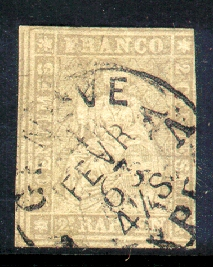
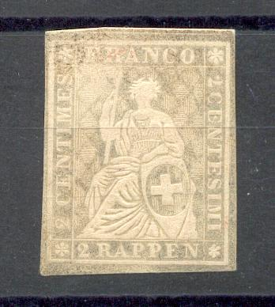
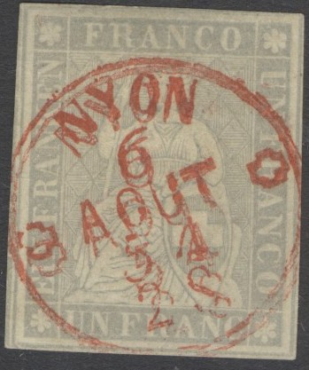
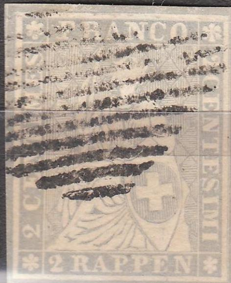
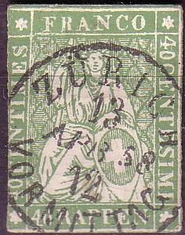
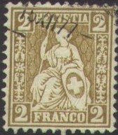
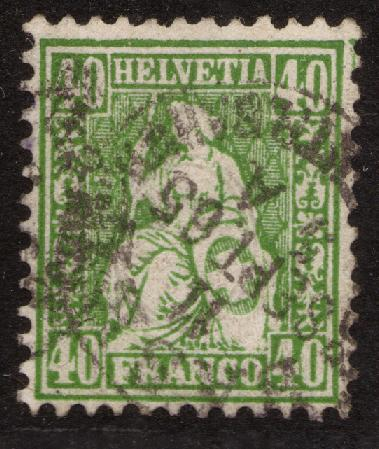
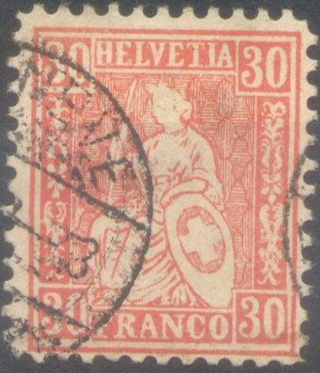
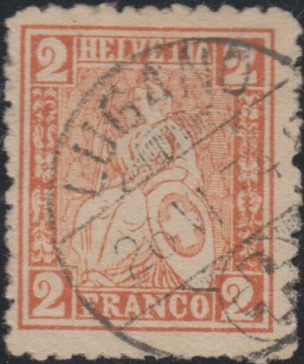

{kind=link}



Return To Catalogue - Switzerland overview
Note: on my website many of the
pictures can not be seen! They are of course present in the
catalogue;
contact me if you want to purchase the catalogue.
2 c grey (1862) 5 c brown 10 c blue 15 c red 20 c yellow 40 c green 1 Fr grey
The word 'RAPPEN' means cents in german language. These stamps are also known as 'Strubeli'. They have silk threads in the colours emerald-green, yellow, black, red, blue and 'regular' green (information obtained thanks to John Barrett Texas).
Value of the stamps |
|||
vc = very common c = common * = not so common ** = uncommon |
*** = very uncommon R = rare RR = very rare RRR = extremely rare |
||
| Value | Unused | Used | Remarks |
| 2 c | R | R | |
| 5 c | *** | * | |
| 10 c | *** | * | |
| 15 c | *** | * | |
| 20 c | *** | ** | |
| 40 c | R | *** | |
| 1 F | RR | R | |
The 2 r grey exists bisected together with a whole 2 r stamp (provisional issue of July to September 1862) in order to make a printed matter rate for Italy. The 3 c value of the next issue was used for this purpose afterwards. All other bisected stamps are of dubious origin.
For the specialist; different printings can be distinghuished: Munich printings and Bern printings.

10 c stamp with many lines in the central part missing; probably
due to worn-out plates.
Most stamps have circular town with date cancels, but other cancels exist:
A stamp with the federal grill cancel:
Other cancels:

Other grill cancel on a 1 F stamp
'EMMEN' and 'WECCIS'(?) in a straight line

I've been told that this 2 c stamp in a slightly different
design, is a proof. However, it might be a Fournier forgery.
The genuine stamps should have 17 vertical lines in the shield with the cross (source: 'The forged stamps of all countries' by J.Dorn).
Apparently a postal forgery of the 40 c was sold in St.Saphorin (source: Bulletin of "Helvetia", society for collectors of Switzerland', vol II, no11, May 1939; available online).
I know that at least the forger Fournier has made forgeries of the 2 c, 40 c and 1 F stamps. In 'The Fournier Album of Philatelic Forgeries' a 2 c stamp with cancel 'BERN 14 DEC 9 18 62 VORM' can be found. I've seen another 2 c Fournier forgery with the cancel 'BADEN 24 JAN. 61'. In this album the 1 F can also be found with a 'LAUSANNE 1 AOUT 56 SOIR' cancel (for images of these cancels click here). The silk thread has been replaced by a printed line. The pattern on the dress is different from the genuine stamps (especially at the bottom). Here such a forgery with a grille cancel:

Fournier forgeries of the 1 F stamp.
A similar Fournier forgery of the 1 F can be
found in the January 1996 Vol. XXII (1) issue of Tell (from the
American Helvetia Philatelic Society): see www.swiss-stamps.us.
It also has a 'NYON 6 AOUT 54 2S' red cancel as shown in the Fournier Album. However, the author in
this article states that it is not a Fournier forgery...
A picture of a 40 c forgery from a Fournier Album can be found
at:
http://www.seymourfamily.com/billclaghorn/FournierAlbum/135a.htm:

Image obtained from the Bill Claghorn site.
Fournier forgeries of the 1 F as found in the Fournier Album.
Two unfinished forgeries, the silk thread is replaced by a
printed line. These forgeries were found in the Fournier Album.
Note that these forgeries are of a different type than the 1 F
Fournier forgery shown above.

Bisected Fournier forgery of the 15 c value; I believe Fournier
did only use this forgery to illustrate his pricelists.
Nevertheless, it can be found in 'The Fournier Album of
Philatelic Forgeries'.

Probably another Fournier forgery of the 2 r value.
See also the Fournier Album of Philatelic Forgeries for more information.


Front and backside of another forgery of the 1 F stamp. The
letters "U" and "N" of "UN" (top
right) are very far apart and a lozenge of the background pattern
is pointing straight at the 'O' of 'FRANCO' while it is well to
the left of it in the genuine stamps.

Another 1 F which is mostly embossed.

A badly done forgery of the 40 c with the face drawn in!

Very blur 10 c forgery? For example the "S" of the left
"CENTIMES" is placed too high up.
Other 'concoctions' consists of removing the silk thread of a genuine stamp and replacing it with a 'rare color' instead.






2 c grey 2 c brown 3 c black 5 c brown 10 c blue 10 c red 15 c yellow 20 c orange 25 c green 30 c red 30 c blue 40 c green 40 c grey 50 c violet 60 c bronze 1 F gold
Value of the stamps |
|||
vc = very common c = common * = not so common ** = uncommon |
*** = very uncommon R = rare RR = very rare RRR = extremely rare |
||
| Value | Unused | Used | Remarks |
| Printed on normal paper | |||
| 2 c grey | * | c | |
| 2 c brown | c | vc | |
| 3 c | * | ** | |
| 5 c | vc | vc | |
| 10 c blue | *** | c | |
| 10 c red | c | vc | |
| 15 c | * | * | |
| 20 c | c | c | |
| 25 c | c | c | |
| 30 c red | *** | * | |
| 30 c blue | *** | c | |
| 40 c green | R | *** | |
| 40 c grey | c | * | |
| 50 c | * | * | |
| 60 c | R | *** | |
| 1 F | * | * | |
| Printed on paper with silk threads (see explanation later) | |||
| 2 c brown | c | * | |
| 5 c | c | c | |
| 10 c red | c | c | |
| 15 c | c | *** | |
| 20 c | c | ** | |
| 25 c | c | * | |
| 40 c grey | c | R | |
| 50 c | c | *** | |
| 1 F | c | *** | |
These stamps have a strange watermark, an embossed circle with a cross in the middle:
(Front and backside of the stamp, the cross is badly visible in
this specimen)
(Reduced sizes)
These stamps exist with overprint 'AUSSER KURS', they were sold by the post office to stamp collectors after they were no longer valid for postal use, examples:

(Reduced sizes)
(Reduced sizes)
For the specialist: All stamps have perforation 11 1/2. They were first issued in 1862 in the values: 2 c grey, 3 c black, 5 c brown, 10 c blue, 20 c orange, 30 c red, 40 c green, 60 c bronze and 1 F gold. The colours were changed and additional values were issued in 1867 to 1878 for the following values: 2 c brown, 10 c red, 15 c yellow, 25 c green, 30 c blue, 40 c grey and 50 c violet. All these stamps are printed on normal paper. In 1881 some of these stamps were issued on paper with small pieces of silk thread incorporated: 2 c brown, 5 c brown, 10 c red, 15 c yellow, 20 c orange, 25 c green, 40 c grey, 50 c violet and 1 F gold. For this last issue uncancelled stamps are cheaper (and sometimes very much cheaper, for example the 15 c, 40 c and 50 c) than cancelled stamps. Example of the backside of a 40 c stamp with the paper of the last issue:
(Paper with small silk threads)
The 2 c was intended to be used on letters upto 15 g with destination within Switzerland. The 3 c was used for letters upto 40 g with destination Italy. The 5 c could be used for local letters with a weight less than 10 g. For local letters with a weight more than 10 g a 40 c stamp had to be used. Registered letters inside Switzerland with a weight less than 10 g needed a 20 c stamp. Letters with destination France, Italy or Belgium needed a stamp of 30 c (if the weight was less than 10 g). A 40 c stamp was used on letters to Germany with a weight less than 15 g. A 50 c stamp was created in 1867 to be used on letters for Great Britain. The 60 c stamp was used on letters less than 7 1/2 g with destination Spain. Finally the 1 F was used for overseas letters.

Two 50 c stamps, the first one with inverted embossing
Bisected stamps of this issue must be considered as cancelled to order according to 'Les Timbres-Poste Suisses 1843-1862' by P.Mirabaud and A.De Reuterskiold (page 135).
AMBULANT cancel
Travelling post offices (railway cancels) can be recognized by the 'AMBULANT' indication instead of the town name. Usually at the bottom the 'Route' is indicated (which traject), but in the above cancel apparently not.
The forger Fournier made very convincing forgeries of these stamps (even with the embossed watermark), the perforation does not 'match' in the corners as it does in the genuine stamps. The ornamental borders at both sides of the stamp are quite badly done in these forgeries. I've seen a Fournier forgery of the 40 c green stamp with cancel 'CHAUX-DE-FONDS 10 JANV 95 2 S' as can be found in 'The Fournier Album'.
Unfinished Fournier forgeries as they can be found in The
Fournier Album of Philatelic Forgeries. 40 c, 60 c and 1 F.
Finished Fournier forgery with forged 'LENZBURG 15 VII 67 I'
cancel.
For example in 'The Fournier album of philatelic forgeries' an originally genuine 10 c red tamp with chemically removed colour can be seen, ready to receive a 60 c bronze or 1 Fr gold impression. In this way, the paper and cancel are genuine. Fournier possesed the official Swiss cancellations of 1882, in original boxes and with city names interchangeable as issued by the Swiss postal department.
Other examples of Fournier forgeries in a different type (note for example the letters 'FR' in the corners of the 1 F stamp):



Fournier forgeries of the 3 c, 60 c and 1 F. The folds on the
dress of the woman are not the same as in the genuine stamps.
Also the sideornaments are very badly done.
Most likely a genuine stamp with a forged 'BASEL-OLTEN 2 5 VIII
31 62' cancel. Next to it a 'ST.GALLEN 16 FEB 63' forged cancel
on a 60 c stamp. These forgeries were found in a Fournier Album. These cancels are known to have been forged
by Fournier.
Another page from the Fournier Album.
Other genuine stamps with forged cancels as found in the Fournier Album:
 
Forgeries of the 2 c with forged 'LUGANO 26 VI 74 8' and 'BIENNE'
cancels, note the different lettering and the visible 'eye' of
the woman; to the right a genuine stamp for comparison

A very primitive forgery with a blue bar cancel.

Strange imperforate 10 c with "FRANCO" different from a
genuine stamp.

Imperforate stamp with the shield pointing to the "C"
of "FRANCO" with cancel "GENEVER 1 Janv."

Another 1 F forgery.
Forged cancels:


(Forged cancels)


Very dubious cancels
Some stamps exist with forged cancels, especially when unused specimens are much cheaper than used ones (the forger Fournier also seems to have practised this). More information (in German) can be found at: http://www.pro-philatelie.de/faelschungen/gr.138/zwergstempel.html. Any grill or parallel line cancel is always forged.
Switzerland alike stamps exist for Russia, Zemstvos issues, Sapozhok:
{kind=link}
{kind=link}
{kind=link}
{kind=link}
{kind=link}
{kind=link}
{kind=link}